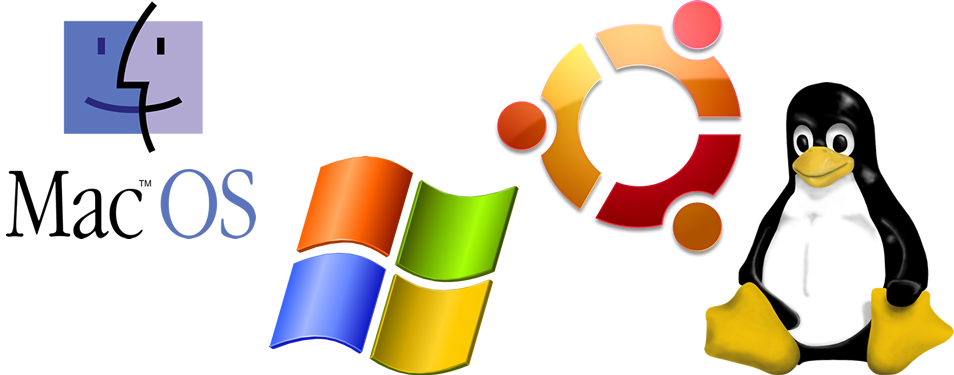
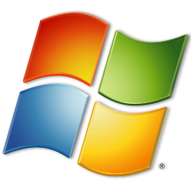
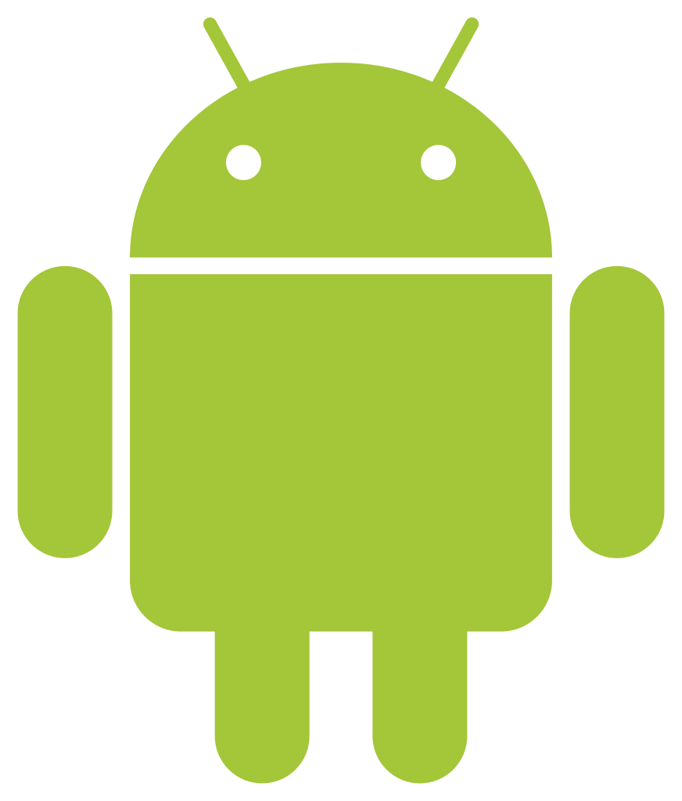
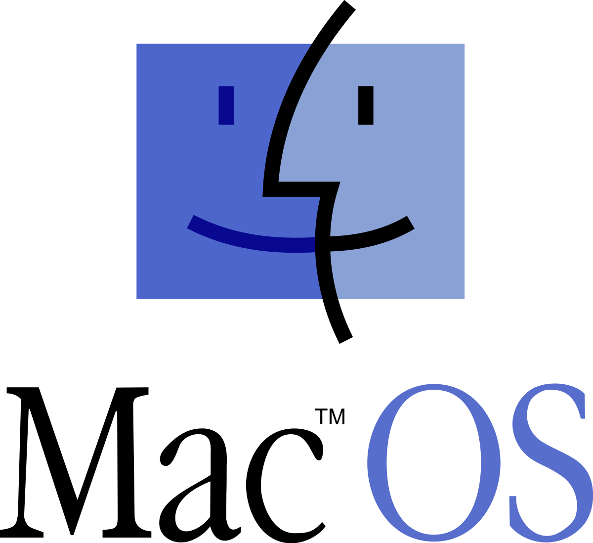
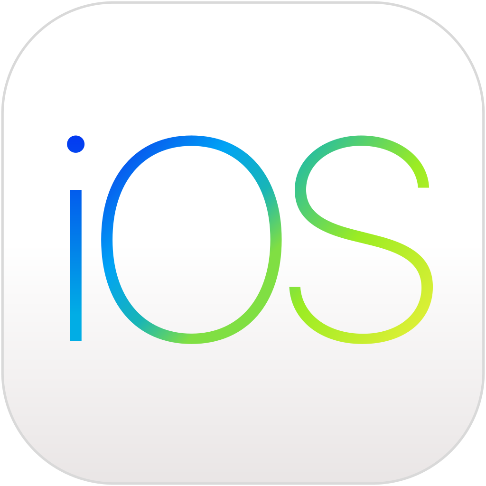

SISTEMI OPERATIVI
CHE COSA SONO I SISTEMI OPERATIVI

I sistemi operativi in informatica sono complessi software che fungono da intermediari
tra gli utenti e l'hardware di un computer. Essenzialmente, coordinano le risorse del sistema, consentendo ai programmi di eseguire operazioni e interagire con l'hardware. Questi sistemi gestiscono le attività di base come l'avvio del computer, la gestione della memoria, l'accesso ai dispositivi di archiviazione e la gestione dei processi.
I sistemi operativi forniscono un'interfaccia utente, che può essere grafica o a riga di comando, attraverso cui gli utenti possono
interagire con il computer. Gestiscono anche le operazioni di input/output, consentendo agli utenti di utilizzare dispositivi come tastiere,
mouse e stampanti. Inoltre, i sistemi operativi supportano la multitasking, consentendo l'esecuzione simultanea di più programmi.
Uno degli aspetti cruciali dei sistemi operativi è la loro capacità di gestire i file e le directory, organizzando e consentendo l'accesso
a dati su dispositivi di archiviazione come dischi rigidi e unità flash. I sistemi operativi sono progettati anche per garantire la sicurezza del sistema, proteggendo i dati dagli accessi non autorizzati e gestendo le autorizzazioni degli utenti.
Alcuni sistemi operativi noti includono Windows, macOS, Linux e Android, ciascuno con le proprie caratteristiche e funzionalità uniche.
Nel contesto dell'informatica moderna, i sistemi operativi sono fondamentali per garantire un'esperienza utente fluida e efficiente
su una vasta gamma di dispositivi, dai computer desktop ai dispositivi mobili.
IL SISTEMA OPERATIVO WINDOWS

Windows è una famiglia di sistemi operativi sviluppati da Microsoft Corporation. Windows 10 è l'ultima versione ufficiale rilasciata, tuttavia, non esiste una versione ufficiale di Windows chiamata "Windows 9". Questo perché Microsoft ha saltato direttamente dalla versione Windows 8.1 a Windows 10.
Windows 10, lanciato nel luglio 2015, ha introdotto molte nuove funzionalità, inclusa un'interfaccia utente migliorata, un menu Start rinnovato, Cortana, l'assistente digitale di Microsoft, e una maggiore integrazione con servizi online come OneDrive. Ha anche introdotto il concetto di Windows as a Service (Windows come servizio), che implica aggiornamenti regolari e continui per migliorare la sicurezza e l'esperienza dell'utente.
Una delle caratteristiche distintive di Windows 10 è la sua capacità di funzionare su una vasta gamma di dispositivi, inclusi computer desktop, laptop, tablet, e dispositivi ibridi come i 2-in-1. Windows 10 è stato progettato per unire l'esperienza utente tra tutti questi dispositivi, consentendo una transizione fluida da un dispositivo all'altro.
È importante notare che le informazioni sulle versioni dei sistemi operativi potrebbero essere cambiate dopo la mia ultima aggiornamento a settembre 2021. Ti consiglio di verificare le fonti più recenti per le ultime notizie sui sistemi operativi Windows.
IL SISTEMA OPERATIVO LINUX

Linux è un sistema operativo open source basato sul kernel Linux e distribuito in diverse varianti, chiamate distribuzioni o distro. Offre una vasta gamma di opzioni per gli utenti, consentendo loro di scegliere l'ambiente desktop, come GNOME, KDE, o XFCE, per adattare l'interfaccia alle proprie preferenze. Le distribuzioni Linux, come Ubuntu, Fedora e Debian, sono conosciute per la loro stabilità, sicurezza e flessibilità.
Linux è ampiamente utilizzato in ambito server grazie alla sua affidabilità e sicurezza, ma è anche adatto per l'uso quotidiano sui desktop. Offre una vasta gamma di software gratuito e open source attraverso gestori di pacchetti come apt e dnf, permettendo agli utenti di personalizzare il proprio sistema senza costi aggiuntivi. Inoltre, Linux è noto per il suo supporto alla linea di comando, che offre un controllo avanzato e automatizzato del sistema.
Un aspetto distintivo di Linux è la sua comunità di sviluppatori e utenti che contribuiscono attivamente al suo miglioramento. Grazie alla vasta base di utenti e alla natura open source del sistema, Linux offre una flessibilità e una personalizzazione che lo rendono una scelta popolare sia per gli utenti esperti che per i principianti interessati a esplorare un sistema operativo alternativo e gratuito.
IL SISTEMA OPERATIVO ANDROID

Android è un sistema operativo open source basato sul kernel Linux, sviluppato principalmente da Google per dispositivi mobili come smartphone, tablet e dispositivi smart. È il sistema operativo più diffuso al mondo per i dispositivi mobili. Android offre un'ampia varietà di funzionalità, tra cui un'interfaccia utente intuitiva, accesso a milioni di applicazioni attraverso Google Play Store, integrazione con servizi Google come Gmail e Google Maps, e una vasta gamma di personalizzazioni grazie alle interfacce utente personalizzate fornite dai produttori di dispositivi (come Samsung Experience, MIUI di Xiaomi, e così via).
Uno dei punti di forza di Android è la sua apertura e flessibilità. Gli sviluppatori possono modificare il sistema operativo per adattarlo alle esigenze specifiche dei loro dispositivi, il che ha portato a una grande diversità di dispositivi Android sul mercato. Inoltre, Android è anche utilizzato in dispositivi come smart TV, smartwatch, altoparlanti intelligenti e altro ancora, grazie alla sua adattabilità.
Android è inoltre conosciuto per la sua integrazione con servizi cloud, che permette agli utenti di sincronizzare facilmente dati e informazioni attraverso dispositivi. Grazie alla sua vasta adozione e alla grande comunità di sviluppatori, Android continua a evolversi, offrendo regolarmente nuove funzionalità e miglioramenti agli utenti di tutto il mondo.
IL SISTEMA OPERATIVO MAC OS

macOS è il sistema operativo sviluppato da Apple Inc. per i computer Macintosh. È noto per la sua interfaccia elegante e intuitiva, oltre a offrire una serie di funzionalità avanzate che migliorano l'esperienza degli utenti di Mac. Una delle caratteristiche distintive di macOS è il Dock, una barra delle applicazioni situata nella parte inferiore dello schermo che offre accesso rapido alle applicazioni preferite e ai documenti aperti.
macOS è altamente integrato con l'ecosistema di Apple, consentendo una sincronizzazione senza sforzo tra i dispositivi attraverso iCloud. Gli utenti possono iniziare un lavoro su un dispositivo e continuare su un altro senza interruzioni. Il sistema operativo offre anche caratteristiche di sicurezza avanzate, come Gatekeeper, che protegge il Mac da software dannosi.
Una delle funzionalità distintive di macOS è Spotlight, un potente strumento di ricerca che consente agli utenti di cercare file, applicazioni, e-mail e altro ancora in modo rapido ed efficiente. Inoltre, macOS offre il supporto per la modalità Dark Mode, che crea un'interfaccia a sfondo scuro per ridurre l'affaticamento visivo in condizioni di scarsa illuminazione.
macOS è anche conosciuto per la sua stabilità e affidabilità, ed è spesso elogiato per l'integrazione fluida tra hardware e software, il che contribuisce a offrire una user experience coerente e piacevole per gli utenti di Mac. Con aggiornamenti regolari che introducono nuove funzionalità e miglioramenti, macOS rimane al passo con le esigenze degli utenti moderni.
IL SISTEMA OPERATIVO IOS

macOS è il sistema operativo sviluppato da Apple Inc. per i computer Macintosh. È noto per la sua interfaccia elegante e intuitiva, oltre a offrire una serie di funzionalità avanzate che migliorano l'esperienza degli utenti di Mac. Una delle caratteristiche distintive di macOS è il Dock, una barra delle applicazioni situata nella parte inferiore dello schermo che offre accesso rapido alle applicazioni preferite e ai documenti aperti.
macOS è altamente integrato con l'ecosistema di Apple, consentendo una sincronizzazione senza sforzo tra i dispositivi attraverso iCloud. Gli utenti possono iniziare un lavoro su un dispositivo e continuare su un altro senza interruzioni. Il sistema operativo offre anche caratteristiche di sicurezza avanzate, come Gatekeeper, che protegge il Mac da software dannosi.
Una delle funzionalità distintive di macOS è Spotlight, un potente strumento di ricerca che consente agli utenti di cercare file, applicazioni, e-mail e altro ancora in modo rapido ed efficiente. Inoltre, macOS offre il supporto per la modalità Dark Mode, che crea un'interfaccia a sfondo scuro per ridurre l'affaticamento visivo in condizioni di scarsa illuminazione.
macOS è anche conosciuto per la sua stabilità e affidabilità, ed è spesso elogiato per l'integrazione fluida tra hardware e software, il che contribuisce a offrire una user experience coerente e piacevole per gli utenti di Mac. Con aggiornamenti regolari che introducono nuove funzionalità e miglioramenti, macOS rimane al passo con le esigenze degli utenti moderni.